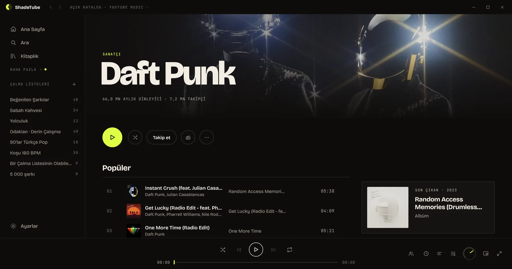
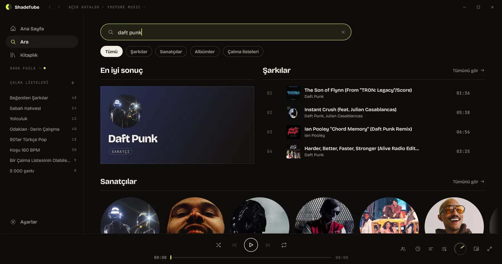
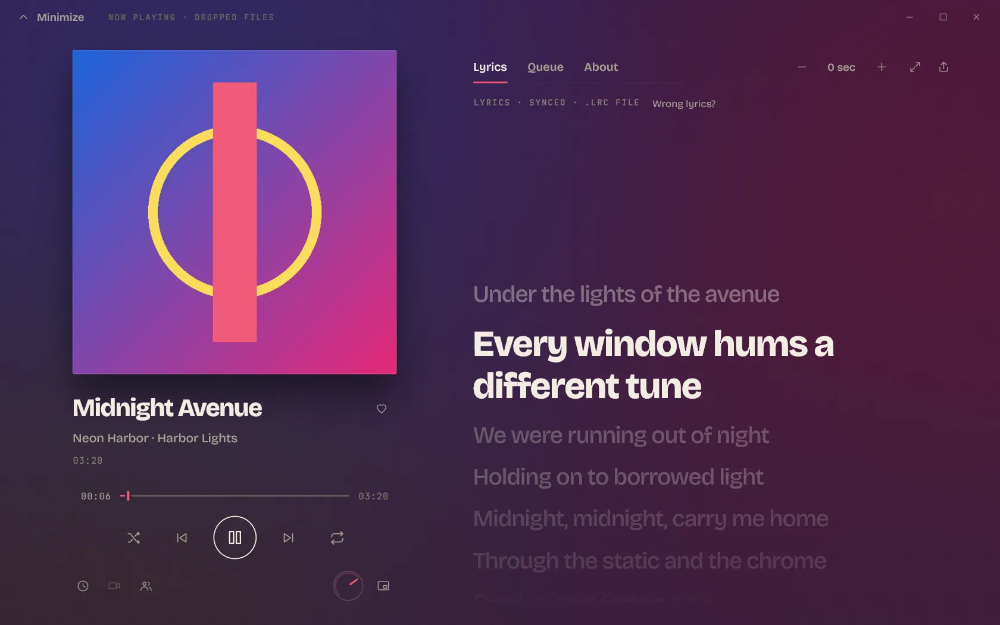
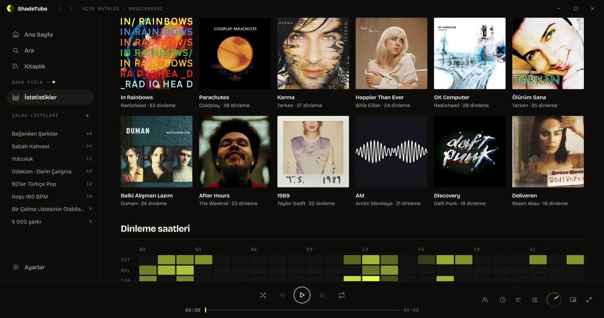
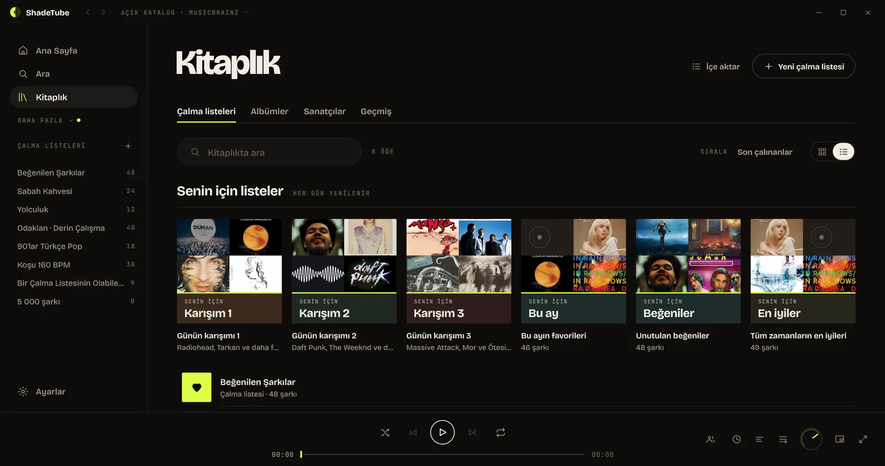
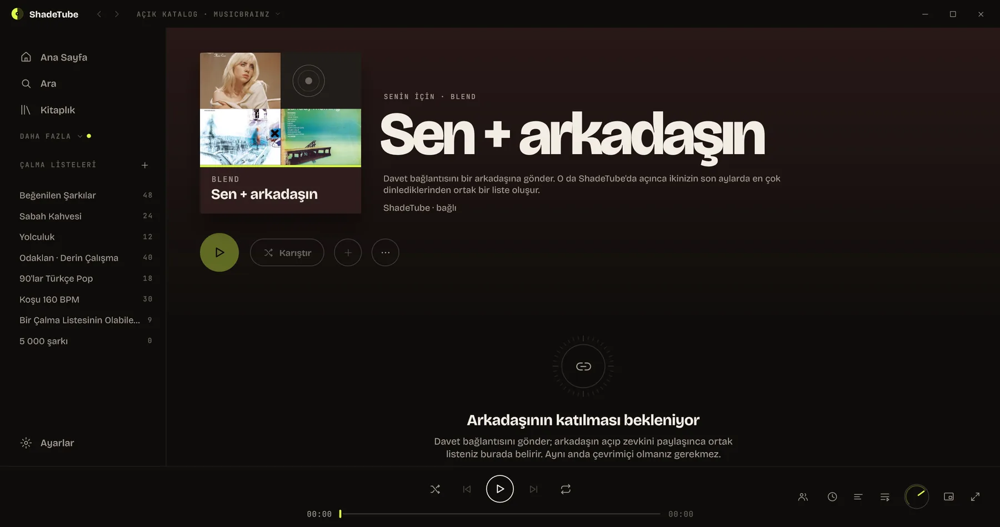
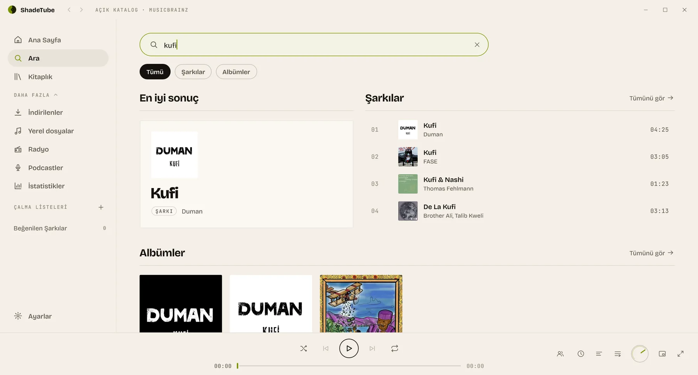

Listen together
Start a session and share the invite link: your friends hear the same song at the same moment. End-to-end encrypted, no Spotify account required. Guests add songs; podcasts and radio are shared too.
Native music player for Windows · open source
Sign in with Spotify, or browse YouTube Music without any account. Every song plays from its matching YouTube recording. Not a web page in a window: the whole interface is drawn natively, opens instantly and stays light.

Catalog
Search songs, albums, artists, playlists, podcasts and profiles, with a best-result card and results that update as you type. Without a Spotify account the whole YouTube Music catalog is there, and every song is pinned to exactly that recording.

Lyrics
Synced lyrics from LRCLIB, Spotify or your own .lrc files. Click a line to jump there, nudge the timing when it drifts, or open the full-screen karaoke view that fills each word as it is sung.

Statistics
Real listening time, your top songs, albums and artists for 7 days, 30 days or all time, a year in review and a heat map of your listening hours. Everything is computed and kept on your computer.

Library
Real 320 kbps MP3s with tags, cover and lyrics, sorted into Artist/Album folders. Liked Songs, playlists and albums can download themselves and stay up to date. What you have played starts instantly from a size-limited cache, offline too.

Gallery
The app at full size, screen by screen. Scroll sideways, or click one to enlarge it.
Together
Start a session and share the invite link: your friends hear the same song at the same moment. End-to-end encrypted, no Spotify account required. Guests add songs; podcasts and radio are shared too.
One shared playlist from your taste and a friend's, with a match percentage. You see exactly what is shared before anything is sent.
Scan a QR code and control ShadeTube from your phone's browser on the same Wi-Fi: playback, volume, queue, search and your library. Nothing to install.

Everything else
ShadeTube listens for a few seconds to what plays on this PC or in the room and tells you the song. Only a fingerprint leaves your computer.
Liked, played fewer than ten times, 150 to 175 BPM: lists that fill themselves from your rules and stay up to date.
The tempo of your songs as a column, for sorting and filtering. Read from tags or measured on your PC.
A full-screen view in the colours of the cover: spectrum, ring, wave or aurora. Press V.
Lyrics without timing? Tap along with the song to time them yourself, and send them to LRCLIB if you like.
Read Japanese, Korean and Cyrillic lyrics in Latin letters, right under the original line.
Type a line you remember into Search and get the song.
Paste a Deezer, Apple Music or TIDAL playlist link and it becomes your own playlist.
Premium's recommendations for free: fitting songs mixed into the queue or between the songs of a playlist.
Start a radio from a song, artist, album or list; when the queue ends, similar songs keep going.
10 bands with presets, smart crossfade that keeps albums gapless, loudness levelling and pitch-safe speed.
YouTube's best audio (Opus) decoded by ShadeTube itself; optional WASAPI exclusive mode at each song's own sample rate.
Watch the clip in Now Playing or in its own always-on-top window; the official video is found and aligned to the audio.
Audio is matched automatically. If it is the wrong recording, pick another video and it is remembered.
Performers, writers, producers and label for every song, in Now Playing and the song menu.
Hold a song, album, list or artist to hear 20 seconds; let go and your song continues where it was.
Talking, sponsor and intro parts are skipped while playing and cut out of downloads.
Search Apple Podcasts or add any RSS feed; subscribe, resume, read show notes, download episodes.
Three sizes: a strip, a square cover, or a wide one with lyrics. Plus tray, media keys and lock screen controls.
A command palette on Ctrl+K, full keyboard support, editable shortcuts and optional global hotkeys.
A Spotify, YouTube or MusicBrainz link pasted anywhere opens the album, list or artist, or plays the song.
Drag songs onto a playlist, Liked Songs or the queue; drop files and folders from Explorer to play them.
Songs and artists you block never play on their own.
New versions install from inside the app with one click, for the setup and the portable zip alike.
Appearance
A theme studio with six built-in themes and your own: colours, corner style and any installed font. The accent follows the cover of the playing song, all the way to the title bar and taskbar icon. Dark, light or system; 80–150 % interface scale; optional Windows 11 Mica.

Questions
No. A free Spotify account is enough, and you do not need an account at all: without one you browse the YouTube Music catalog.
The audio plays from YouTube. Spotify, YouTube Music or MusicBrainz only provide the catalog: your library, the song lists and the covers. Each song is matched to its YouTube recording automatically, and you can pick another one if the match is wrong.
No. There is no telemetry and no server of ours. Your listening history, statistics and settings stay in a folder on your computer, and your Spotify session is stored encrypted.
Windows 10 (version 1809 or newer) and Windows 11, 64-bit. There is no macOS or Linux version.
ShadeTube checks for new versions itself and installs them from inside the app with one click. With Scoop you can update from the command line too.
Yes. Downloaded songs, podcast episodes and your local files play without a connection, and songs you played recently start from the cache.
Install
Run the setup, or unpack the portable zip and start ShadeTube.exe. No admin rights, no account needed to start.
scoop bucket add shadetube https://github.com/shadesofdeath/ShadeTube; scoop install shadetube/shadetube
winget install shadesofdeath.ShadeTube
winget: available once the package is accepted into the community repository.
No telemetry and no server of ours: ShadeTube talks only to the services you use. Your Spotify session is stored encrypted with Windows DPAPI. The source code is open for anyone to read.